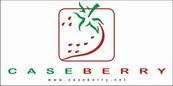
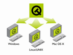

In 2002 the Information technologies and automation systems (ITAS) department was formed as the junction of Automation control systems and Computing and automated management departments. ITAS department is the part of Electrotechnical faculty Perm state technical university.
itas.wmv - Videoclip about department (13.6Mb)
The department offers education on the following directions:
Each speciality has the directions of researches:
220100 Speciality :
- 220101 «Computer facilities (on areas)»
- 220101 «Computer facilities in oil-and-gas branch»;
- 220101 «Computer facilities in bank activity».
- 220104 «High-end computer systems and technologies».
220200 Speciality :
- 220203 «Automated of real time systems»;
- 220205 «Distributed automated system»
The department has license agreements with leading manufacturers of software and hardware
MSDN Academic Alliance program is intended for faculties and departments of the high educational institutions teaching IT-disciplines (including base sub-faculties in the academic institutes), technical schools, colleges, grammar schools conducting education on IT-disciplines. |
|
|
The Department ITAS has got operating system SUSE Linux 9.2 Professional - the most full edition among existing in ruler SUSE Linux.The Department organized the educational center based on Suse. |
|
|
Oracle Academic Initiative program is developed specially for the state higher educational institutions. They receive the necessary software and technical support from the Oracle company. The program has more than 80 topics in products. Materials of the course is included in the curriculum. The ITAS department trains at the certificated courses: "Programming in Oracle" and "Architecture and administration Oracle". Students including in base of experts and receive an opportunity to pass examinations on reception of certificate Oracle. |
|
|  | CASEBERRY it is the tool for the object-oriented analysis and software design. CASEBERRY is convenient, easy in development and accessible CASE the tool, allowing to model in notation UML. Product CASEBERRY is given to Company " Institute of Information Systems " (group of companies IVS). |
Association Konnex is the unique organization on development of software ETS Tool Software and unites manufacturers of the equipment of technology EIB worldwide. The association is specifications and the description of the standard of technology EIB. |
|
|
Company IBM provide the Perm Technical University the license for
software and teaching materials framework of program IBM Academic Initiative. |
|
Opera provide higher school the protected, fast and reliable way a browser completely free-of-charge. The browser "Opera" possesses the following features: viewing of several pages in one window, a set of the built - in search means, blocking of emerging windows, preservation of sessions and many other things. |
|
|  |
Library Qt one of popular libraries for the organization of the graphic user interface (GUI). Complex Qt Toolkit is developed by Norwegian firm Troll Tech. Library Qt represents the finished and multiplatform object-oriented environment for development of GUI-appendices with use of language C ++. Qt it is integrated with libraries OpenGL/Mesa 3D perfectly. Department ITAS have the license for use of library Qt in the educational purposes. |
|
The scientific and technical base of department corresponds to the international standards. Only the modern equipment and the software is used in educational process. Computer classes have been organized and completed by technical equipment and furniture. Students can use the Internet.
Video from the IP-cam installed in audience 229 -

Stands are established on systems of automation of manufacture, industrial Ethernet, E-home (P-NET, LonWorks, EIB) in laboratory Fieldbus of systems. Laboratory researches are spent on of real time systems. Students study base of work with SCADA-application (Citect, Master Scada, InTouch, Trace Mode and others).

|
There is an opportunity of preparation and retraining of experts under various programs of additional education on directions: the information technologies, the automated systems of various purpose, corporate databases, programming, Web-technologies, modeling of business - processes.
The department execute an preparation of engineers – developers of complex program systems, has PHID study and doctoral studies in this direction
Head of the department: Fayzrakhmanov R.A.